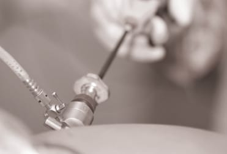

Cirurgia urológica minimamente invasiva, com pequenas incisões, menos dor e recuperação mais rápida — para procedimentos do rim, do ureter, da adrenal e do trato urinário.
A videolaparoscopia é uma técnica de cirurgia minimamente invasiva realizada por pequenas incisões, sem os grandes cortes da cirurgia aberta.
Por essas pequenas aberturas, o cirurgião introduz uma câmera de vídeo (laparoscópio) e instrumentos delicados, operando com visão ampliada em alta definição projetada em um monitor. O resultado é uma cirurgia precisa, com muito menos trauma para o corpo — menos dor, menos sangramento e recuperação mais rápida. Na UroClínica Rio, aplicamos a técnica aos principais procedimentos urológicos, sempre com indicação individualizada.

Cirurgia por pequenas incisõesAo substituir os grandes cortes por pequenas incisões, a técnica reúne a eficácia da cirurgia ao conforto de um procedimento menos invasivo.
Pequenas incisões significam menor trauma nos tecidos e menos dor no pós-operatório.
A visão ampliada e a precisão da técnica reduzem o sangramento durante a cirurgia.
Incisões pequenas resultam em melhor aspecto estético e menor risco de complicações na ferida.
Menor tempo de internação e retorno mais ágil às atividades do dia a dia.
Ferimentos menores e menor exposição reduzem o risco de infecção pós-operatória.
A câmera em alta definição amplia o campo cirúrgico, favorecendo a precisão em áreas delicadas.
A técnica é indicada para diversos procedimentos urológicos, realizados de forma menos invasiva e com o menor impacto possível para o paciente.
A indicação depende da avaliação clínica individual e dos exames de imagem. Nem todo caso tem indicação para a via laparoscópica — a decisão é sempre compartilhada com o urologista.
Como a cirurgia minimamente invasiva se posiciona frente à técnica aberta tradicional.
| Critério | Videolaparoscopia | Cirurgia aberta |
|---|---|---|
| Incisões | Pequenas | Grande corte único |
| Dor no pós-operatório | Menor | Maior |
| Sangramento | Menor | Maior |
| Tempo de internação | Mais curto | Mais longo |
| Recuperação | Mais rápida | Mais lenta |
| Cicatrizes | Menores | Maiores |
Quadro comparativo de caráter educativo. A melhor técnica para cada paciente é definida na consulta, considerando o tipo de cirurgia, o histórico de saúde e os objetivos do tratamento.
Consulta detalhada com análise dos exames de imagem para confirmar a indicação e planejar a cirurgia de forma personalizada.
Cirurgia minimamente invasiva por pequenas incisões, com câmera em alta definição e instrumentos delicados, em ambiente hospitalar de excelência.
Menor tempo de internação e retorno mais ágil às atividades, com acompanhamento próximo da equipe da UroClínica Rio em cada etapa.
A videolaparoscopia permite resolver problemas complexos do trato urinário com o mínimo de trauma — grandes cirurgias, feitas por pequenas incisões, com recuperação mais rápida.
Videolaparoscopia é uma técnica de cirurgia minimamente invasiva feita por pequenas incisões, através das quais o cirurgião introduz uma câmera de vídeo (laparoscópio) e instrumentos delicados. Permite operar órgãos como o rim, o ureter e a adrenal sem cirurgia aberta.
Entre as principais estão a nefrectomia (retirada do rim ou de tumor renal), a pieloplastia (correção da junção do rim com o ureter), a adrenalectomia (retirada da glândula adrenal) e outras reconstruções do trato urinário.
Por usar pequenas incisões, a videolaparoscopia proporciona menos dor no pós-operatório, menor sangramento, cicatrizes menores, menor risco de infecção, menos tempo de internação e recuperação mais rápida do que a cirurgia aberta.
Sim. É uma técnica consolidada e segura quando realizada por equipe experiente. A visão ampliada em alta definição aumenta a precisão do cirurgião. A indicação é sempre individual, definida após avaliação clínica e de imagem.
Ambas são minimamente invasivas e feitas por pequenas incisões. Na cirurgia robótica, o cirurgião opera por meio de um sistema robótico que amplia a precisão dos movimentos. A melhor técnica para cada caso é definida pelo urologista.
Na UroClínica Rio, com urologistas experientes em cirurgia minimamente invasiva. A avaliação é feita nas unidades da Barra da Tijuca e de Bonsucesso, com agendamento pelo WhatsApp (21) 97621-9403.
Tire suas dúvidas sobre a videolaparoscopia e descubra a técnica mais indicada para o seu caso.